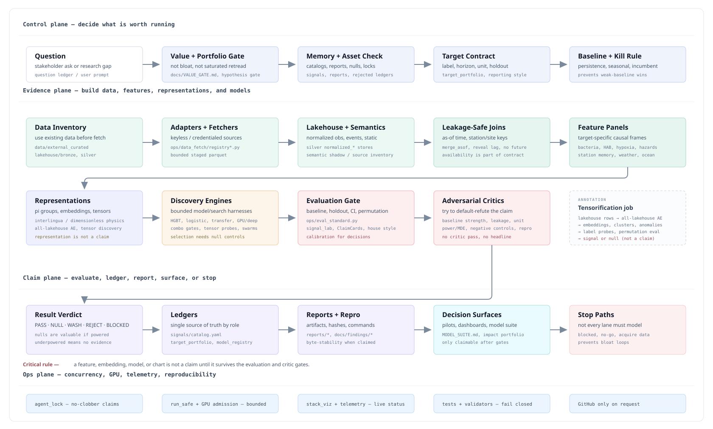

{kind=link}
Start with the question.
See the active hazards, targets, evidence status, and nulls before proposing another run.
Browse questionsMonterey Bay AI Lab
Mission ControlResearch-to-evidence pipeline
For scientists and science-data/AI students, this is the lab operating system: how a coastal question becomes a target contract, how public observations become lakehouse tables and model inputs, and how claims survive baselines, holdouts, null checks, critics, ledgers, and reproducible reports.
Left to right within each plane: decide what is worth running, build evidence, evaluate claims, publish or stop, and keep operations reproducible.

See the active hazards, targets, evidence status, and nulls before proposing another run.
Browse questionsTrace raw observations through lakehouse layers, leakage-safe joins, features, and model engines.
Watch walkthroughClaims only count after baselines, holdouts, confidence intervals, permutation nulls, and critic passes.
Review findingsUse the map to spot missing data, blocked targets, weak baselines, or places where a model actually helps.
Open ledgerCritical rule: a feature, embedding, model, or chart is not a claim until it survives the evaluation and critic gates.